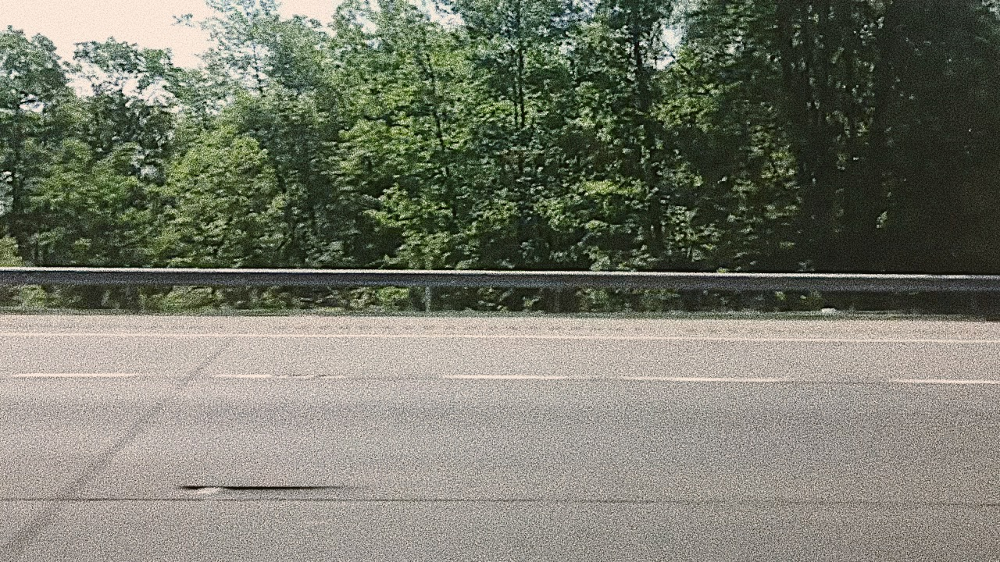
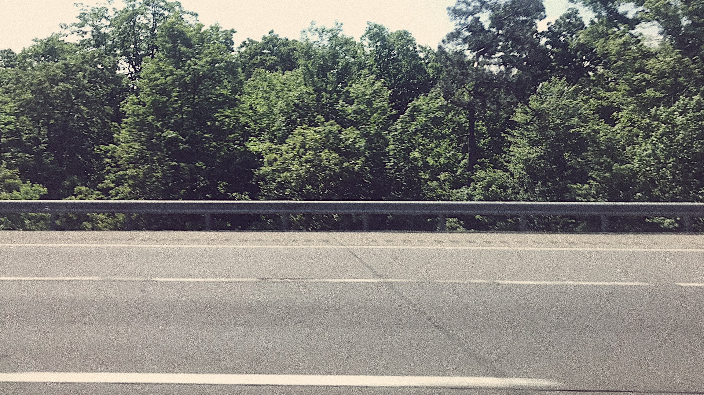
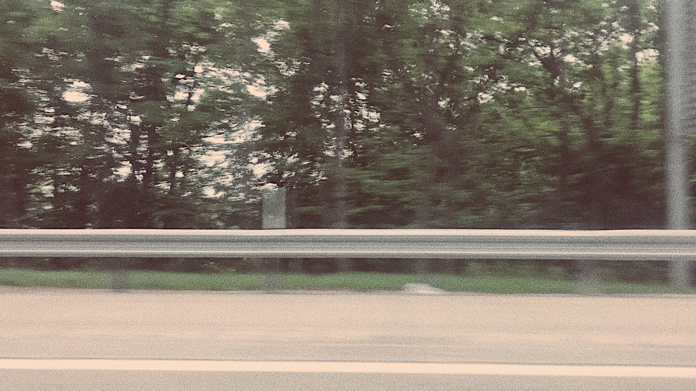

"Sense of place is the sixth sense, an internal compass and map made by memory and spatial perception together." - Rebecca Solnit
photographs, time-lapse video of a car ride, sound recording from home, actetate paper
digital and mixed media
endless, static, personal, reminiscence, nostalgic, humane

Meaingless yet meaningful ...
Think about your sense of place. Is your "meaningless" place really senseless?